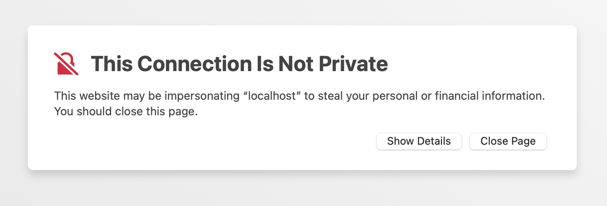
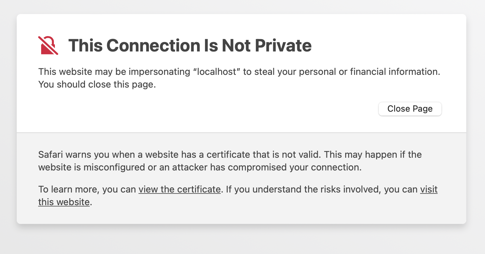

Cluster set up
This page covers how you get set up on the GenomeDK cluster to do your project.
First log in to the cluster:
ssh <cluster user name>@login.genome.au.dkInstall Python on your cluster account
You need to install miniconda (a minimal Anaconda version) in your cluster home dir. Log in to the cluster and run this command to download the miniconda install script:
wget https://repo.anaconda.com/miniconda/Miniconda3-latest-Linux-x86_64.shThen use this command to download and install miniconda:
bash Miniconda3-latest-Linux-x86_64.shFollow the default installation, and say yes when it asks you if it should run conda init for you.
NP: Now log out of the cluster and log back in. This is needed to make the conda command available to you.
The project folder
The project folder is a folder that is set up on the cluster to hold your project. I use the placeholder <projectfolder> here, but it will be called something sensible like baboonadmixture.
It is accessible to only you and anyone else you collaborate with (such as your supervisor). The project folder is in your home directory and should hold the following subfolders:
<projectfolder>
/data
/people
/<username>
/<supervisor_username>The <projectfolder>/people/<username> is your domain. This is where you have all the files that relates to your project.
The name of the project folder is is also the name of the account that gets billed for the work on the cluster. When you run gwf, srun, sbatch or slurm-jupyter (see below) you must specify that project name using the -A or --account options (see below for more details on that).
Make a Git repository for your project

Git is a version control tool that you use from the terminal. A folder under Git control is called a repository. Git does not interfere with your files and it does not save them. It lets you monitor the state of your files so you can easily see if any files are added, modified, or removed, and it allows you to (manually) maintain a record of what files where changes when, how, and for what reason.
- Start by creating your own github account if you do not have one already.
- Follow the instructions on this page to add ssh keys to GitHub.
- Email me your GitHub username on so I can add you to the shared GitHub account for our research group. I will create a repository for you with scaffold of folders and with placeholder files that will get you started in the right way.
- Wait for an email or notification and accept my inviation to the “munch-lab” GitHub organization and an email from me with the name of the repository I made for your project. On these pages, I will use
<repositoryname>for the name of your repository. - Make sure you are logged into your GitHub account and then go to the repository listing at the munch-lab organization on GitHub. Find the directory I made for you and have a look at what is in there. Leave it there for now.
Cloning this git repository to the cluster
Start logging into the cluster and run these two commands to let Git know who you are:
git config --global user.name "<Your GitHub user name>"
git config --global user.email <your_email@whatever.com>Go to your folder under the project folder (~/<projectfolder>/people/<username>). Once you are in that folder, you can “clone” your git repository from GitHub to the folder on the cluster.
git clone git@github.com:munch-lab/<repositoryname>.git(replace <repositoryname> with the actual name of your repository).
You now have a folder called <projectfolder>/people/<username>/<repositoryname> and this is where you must keep all your files for the project.
If you cd into <repositoryname> and run ls, you will see a number of folders.
data: Stores small (tens of megabases) data files you want to keep .binder: Stores theenvironment.ymlfiles documenting your conda environment used in the project.sandbox: Stores experiment and other files that are not yet part of your project workflow. This keeps the rest of the folder structure clean.scripts: Stores Python scripts that that produces intermediate and final results.steps: Stores intermediary files (“steps” on the way to final results).notebooks: Stores Juptyer notebooks with code, documentation, and results.figures: Stores result plots and figures you make.results: Stores the small result files of your project (tens of megabases).reports: Stores documents reporting your findings.
Files in all those folders are under Git control, except files in the steps folder. Those files are not backed up in any way, but should instead be reproducible using the code and information in your other folders.
Your files on the cluster are not backed up! If you want to backup files, you need to put them in a folder called BACKUP. But even if you do you may loose a week of work, since the backup loop is very slow.
The best way to keep your progress safe, is to ensure is reproducible and pushed to GitHub as often as it makes sense (at least onece a day). The more often you do it, the less work you will loose if you accidentally delete or overwrite a file. More about that in Reproducible research and Version control.
Create a conda environment
Log in to the cluster. Here, we will be a little more through with the conda environment, since this is where you will be doing all your work.
Begin by creating an empty environment like this (you can pick another name than birc-project if you have an environment with that name already):
conda create -n birc-projectNow activate the environmet
conda activate <name>Make sure it now says (birc-project) and and not (base) at your terminal prompt.
Now add channels to the environment (places to search for packagages). These will do for now (you can always add more later):
conda config --env --append channels conda-forge
conda config --env --append channels bioconda
conda config --env --append channels gwforg
conda config --env --append channels kaspermunchThen install the actual packages. The following command installs the basic packages you will need for typical Python-based data analysis project:
conda install git gwf jupyterlab ipython nbdime seaborn statsmodels scipy gwf pytablesIf your project use probabilistic programming with PyMC (if you are in doubt, it is not), you need to install these packages as well:
conda install arviz pymc seaborn xarray bambiIf you prefer to use R for data analysis and plots, you should use the following two commands to add the r channel and install the basic R packages:
conda config --env --append channels r
conda install r-essentials rpy2Export it to the binder folder to document which packages your project depends on:
conda env export > binder/environment.yml
conda env export --from-history > binder/environment-from-hisitory.ymlImportant: Whenever you log into the cluster to work on your project, you should activate your birc-project environment like this, otherwise the packages are not available:
conda activate birc-projectWhen your environment is active, it says (birc-project) on the command prompt instead of (base).
Tip: git and jupyter
Git diff and merge does not play well with jupyter notebooks. To fix that you can activate your environment and navigate to your cloned repository. Then run this command (assuming you installed nbdime in your conda environment): nbdime config-git --enable.
How to run a Jupyter notebook on the cluster
Jupyter runs best in the Chrome browser or Safari on Mac. For the best experience, install that before you go on. It does not need to be your default browser. slurm-jupyter will use it anyway. Now make sure you are on your own machine and that your popgen environment is activated. Then run this command to start a jupyter notebook on the cluster and send the display to your browser:
slurm-jupyter -u <cluster_user_name> -A <projectfolder<> -e birc-project --chrome(replace <cluster_user_name> with your cluster user name, <projectfolder> with your project folder name).
Watch the terminal to see what is going on. After a while, a jupyter notebook should show up in your browser window. The first time you do this, your browser may refuse to show jupyter because the connection is unsafe. In Safari you are prompted with this winidow where you click “details”:

Then you get this window and click “visit this website”:

In Chrome, you can simply type the characters “thisisunsafe” while in the Chrome window:

Once ready, jupyter may ask for your cluster password. To close the jupyter notebook, press Ctrl-c in the terminal. Closing the browser window does not close down the jupyter on the cluster. You can read this tutorial to learn how to use a jupyter notebook.
Visual Studio Code

If you did not do so when you installed Anaconda, you should download and install Visual Studio Code. VScode is great for developing scripts and editing text files. Once you have installed VScode, you should install the “Remote Development” extension. You do that by clicking the funny squares in the left bar and search for “Remote Development”. Once installed, you can click the small green square in the lower-left corner to connect to the cluster. Select “Connect current window to host” then “Add new SSH host”, then type <username>@login.genome.au.dk, then select the config file .ssh/config. Now you can click the small green square in the lower-left corner to connect to the cluster by selecting login.genome.au.dk. It may take a bit, but once it is done installing a remote server, you will have access to the files in your home folder on the cluster.
Running interactive commands on the cluster
When you log into the cluster, you land on the “front-end” of the cluster. Think of it as the lobby of a giant hotel. If you execute the hostname command, you will get fe-open-01. fe1 is the name of the front-end machine. The “front-end” is a single machine shared by anyone who logs in. So you cannot run resource-intensive jobs there, but quick commands are ok. Commands that finish in less than ten seconds are ok. In the exercises for this course, you will run software that takes a much longer time to finish. So you need one of the computing machines on the cluster, so you can work on that instead. You ask for a computing machine by running this command:
srun --mem-per-cpu=1g --time=3:00:00 --account=<projectfolder> --pty bashThat says that you need at most one gigabyte of memory, that you need it for at most three hours (the duration of the exercise), and that the computing expenses should be billed to the project <projectfolder>. When you execute the command, your terminal will say “srun: job 40924828 queued and waiting for resources”. That means that you are waiting for a machine. Once it prints “srun: job 40924828 has been allocated resources”, you have been logged into a computing node. If you execute the hostname command, you will get something like s05n20. s05n20 is a computing machine. The same way you moved from your own computer to front-end machine of the cluster by logging in using ssh, the command above moves you from the front-end to a compute machine. Now you can execute any command you like without causing trouble for anyone.
Now try to log out of the compute node by executing the exit command or by pressing Ctrl-d. If you execute the hostname command again, you will get fe1.genomedk.net showing that you are back at the front-end machine.
Queueing commands on the cluster
For non-interactive work, it is better to submit your command as a job to the cluster. When you do that, the job gets queued along with many other jobs, and as soon as the requested resources are available on the cluster, the job will start on one the many many machines. To submit a job, you must first create a file (a “batch script”) that contains both the requested computer resources and the command you want to run.
Create a file called myscript.sh with exactly this content:
#!/bin/bash
#SBATCH --mem=1gb
#SBATCH --time=01:00:00
#SBATCH --account=<projectfolder>
#SBATCH --job-name=firstjob
echo "I can submit cluster jobs now!" > success.txt(replace <projectfolder> with your project folder name)
The first line says this is a bash script, the lines following three lines say that your job needs at most one gigabyte of memory, will run for at most one hour, that the expenses should be billed to the project <projectfolder>. The fourth line gives the name of the job. Here we have called it firstjob, but you should name it something sensible.
You submit the job using the sbatch command:
sbatch myscript.shNow your job is queued. Use the mj command to see what jobs you have queued or running. That will show something like this:
Alloc
Job ID Username Queue Jobname SessID NDS S Elap Time nodes
---------------- -------- -------- ---------- ------ --- - ---------- -----
34745986 kmt normal firstjob -- 1 R 0-00:19:27 s03n56If you want to cancel this job before it finishes, you can use the scancel command:
scancel 34745986Once your job finishes, it has created the file success.txt and written “I can submit cluster jobs now!” to it. So see that you can use the cat command:
cat success.txtWhen you a program or script on the command line, it usually also prints some information in the terminal. When you run a job on the cluster there is no terminal to print to. Instead, this is written to two files that you can read when the job finishes. In this case, the fiels are called firstjob.stdout and firstjob.stderr. To see what is in them, you can use the cat command:
cat firstjob.stdoutand
cat firstjob.stderrThat is basically it.
How to copy files to and from the cluster
You may need to transfer files back and forth between your own machine and the cluster. To copy a file called file in a directory called dir on the cluster to the current folder on your own machine, you can use the scp command:
scp <cluster_user_name>@login.genome.au.dk:dir/file .To copy a file called file in the current folder on your own machine to a folder called dir on the cluster, you do this:
scp ./file <cluster_user_name>@login.genome.au.dk:dir/